Specialization
- Subject
- Server meshing and ownership transfer
- Duration
- 90 hours
- Engine
- TGA Custom Engine
- Network library
- Winsock
Summary
I got really interested in networking during the networking course, so I decided to do my specialization in it.
At first, I had a hard time deciding what direction to take, but my educator suggested looking into Star Citizen’s server meshing. After doing some research, it sounded like a fun and interesting subject to explore and try to implement.
So I chose to focus my specialization on server meshing and ownership transfer between servers. The goal was that if two players are on different servers, they should still be able to see each other and potentially interact.
For this project, I implemented player transfer between servers, where clients can move across server boundaries and have their ownership transferred to another server.
Preparations
Planning and Research
Because this was quite new for me and the networking course was not finished when we started the specialization course, I decided to focus on research during the first few weeks and plan the structure and architecture for the project.
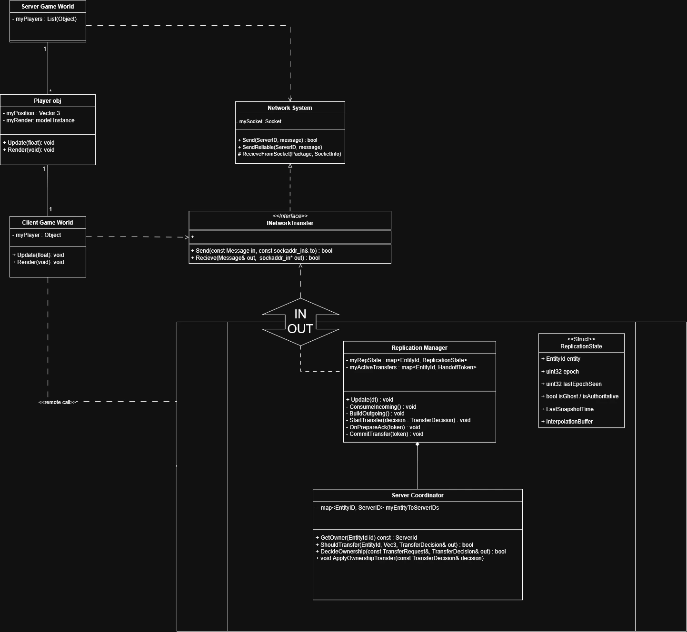
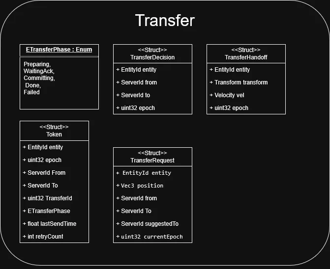
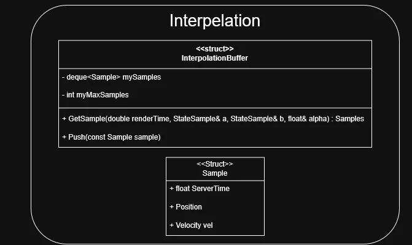
I knew I had to do quite a lot of architecture work to get something working in a satisfactory way.
I looked at Star Citizen’s roadmap to get an idea of what would be needed for a working prototype, and then I started working on my class diagram. We had a course where we had to use class diagrams in Group Project 3, but I had never really used them in other projects. I thought it would be useful to make one to get an overview of what I needed and how I could structure it.
It also gave me the overview to notice when something felt wrong or when something needed to change.
I also started planning how to handle server ownership transfer and what data would be required to handle ownership changes.
Debug Tools – Planning and Implementation
I knew I needed debug tools, but since we only had around 90 hours, I decided a logger would be enough. It also felt like a good opportunity to learn more about macros and different ways to track problems, and I could improve it during development as issues arrived.
So at first, I made a simple macro to log where it was called from, including file and line. I noticed that when execution stepped into functions, the log would show that file and line instead. This caused some headache when I used my byte reader/writer a bit into the project.
The problem was the log could only show the function it was called from, but the actual issue could come from the original call site. I found out that I could capture the call site by using std::source_location, which made it easier to log where the problem actually started.
Implementation
Entity Stream
When it was time to start the implementation, I began with the entity stream. This is where the clients and servers communicate.
The stream works like a routing layer. It takes input from a client, checks which server it should go to, and sends the message to that server. On the server side, it receives messages and forwards them to the clients that need that data.
Currently, the stream sends data to all clients so they can all see each other. In a real scenario, it would only send data to the clients that actually need it or are in range.
Server and Client
When I had the entity stream at an MVP stage, I moved on to getting the client and server to communicate only through the stream layer. When both the client and server could communicate with the stream layer, I began working on streaming data between servers and clients.
Because I had already implemented my network interface, it was very simple to get the servers and clients up and running. The main difference was that both the client and server now acted as nodes connected to the entity stream.
Clients and servers both act as nodes, and the entity stream determines whether something is treated as a client or a server based on the initial connection message.
There is server authority, and each server controls the state of its own entities. Ownership can be transferred to another server when certain conditions apply, but it’s still only one server that handles the “truth” for that entity.
Extra Functionality
During the specialization, I felt this was a good time to test different areas in networking. I tried implementing multicast and multipart messages.
First, I started implementing my multipart reader and writer. It packs data structures with a header, but I didn’t know how it would determine which data payload it should serialize or deserialize from raw byte data.
After some research, I found std::variant, and I created a payload registry and a message dispatcher.
Message Dispatcher
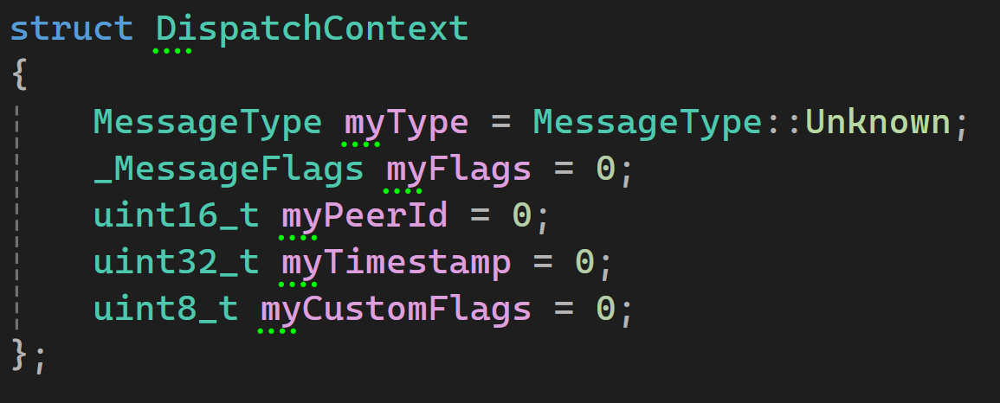
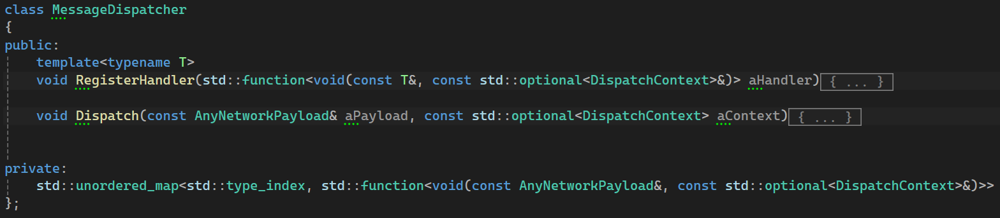
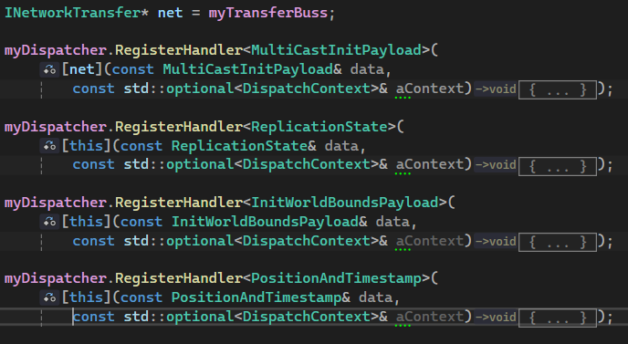
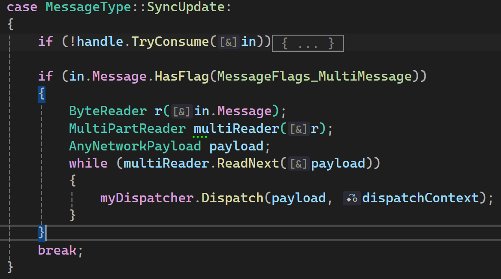
My message dispatcher takes the parsed data from the payload registry, and if there is a registered function to handle that data type, it calls that function.
I made the dispatcher so that each message in a multipart message can be handled individually by the function registered to that data structure.
It also made it so the logic for handling messages isn’t one large function.
Payload registry
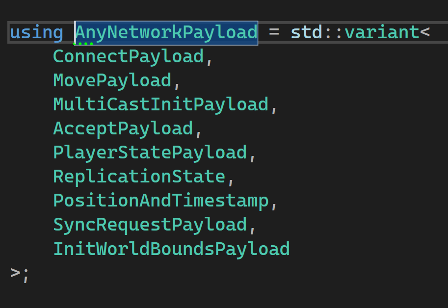
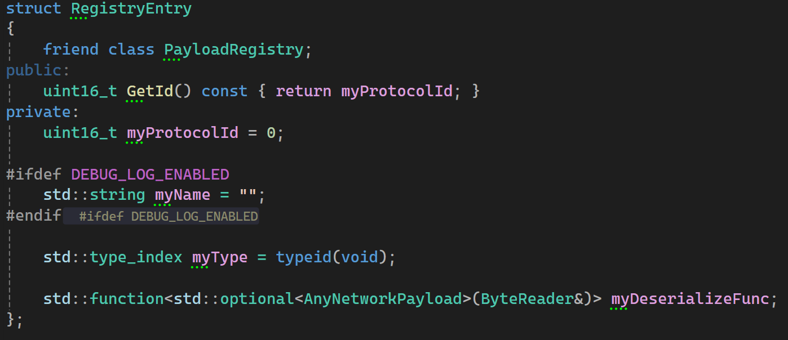
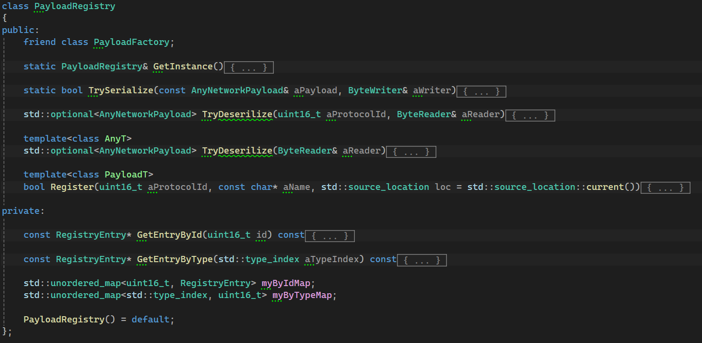
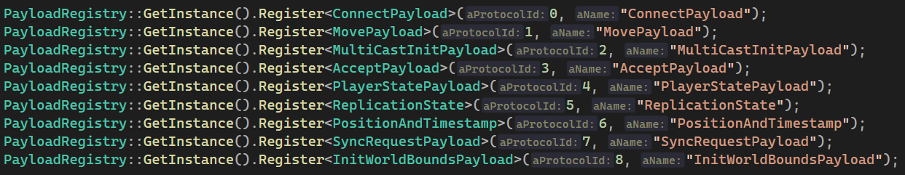
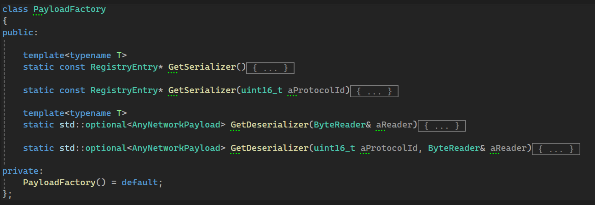
My payload registry takes a struct as a template argument, and it also needs to be registered in the std::variant definition.
Each registration includes an ID and a friendly name.
Message Handler
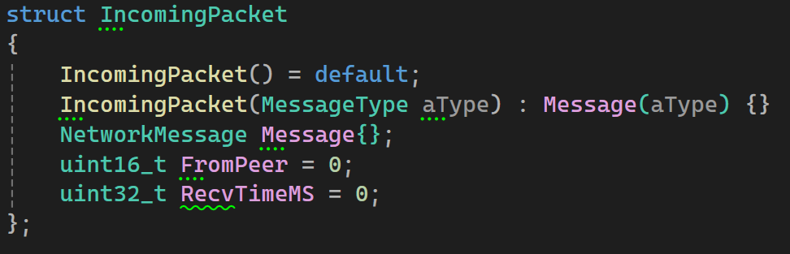
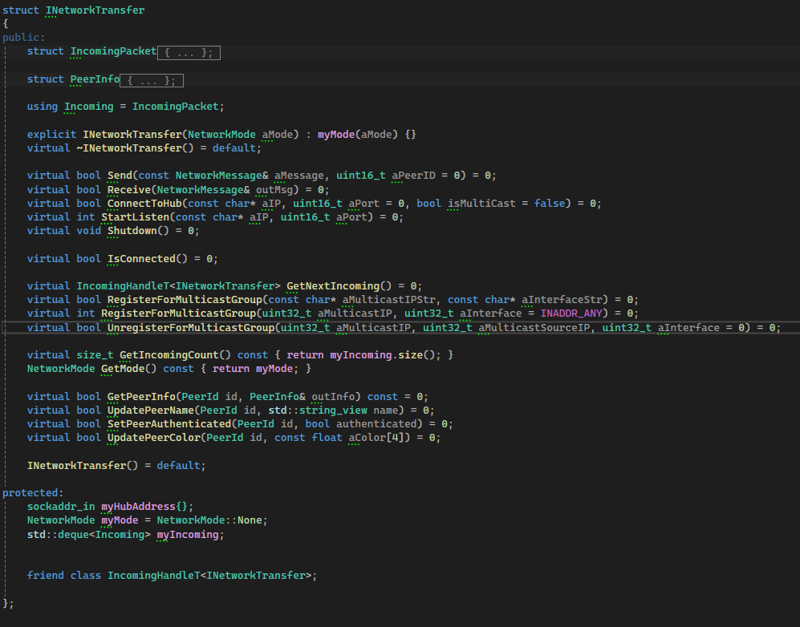
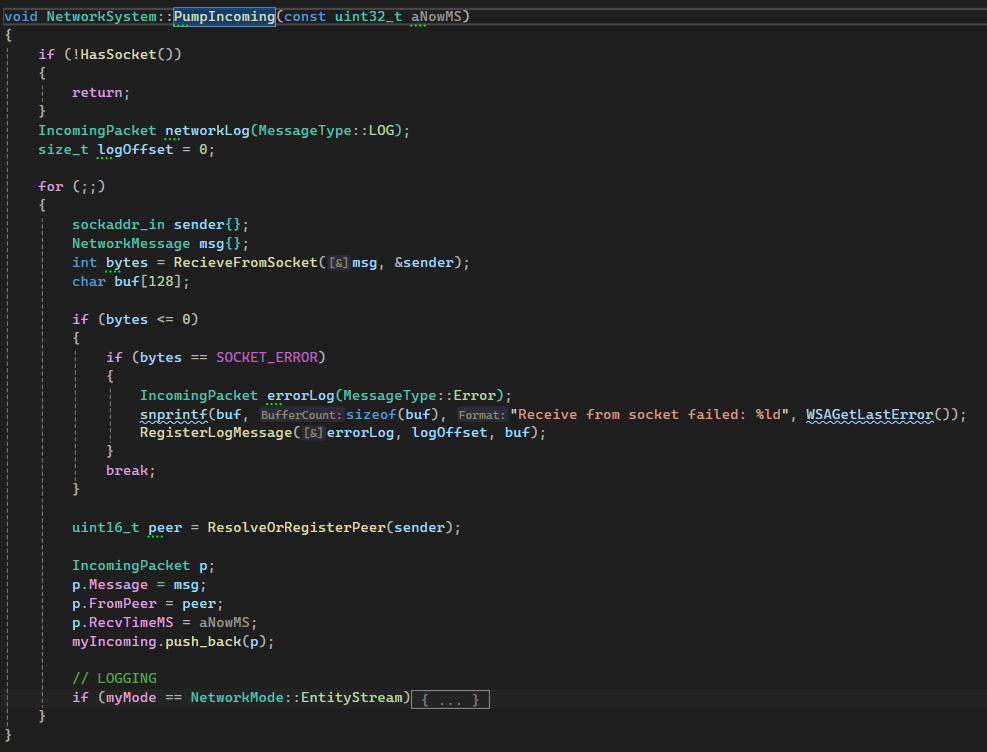
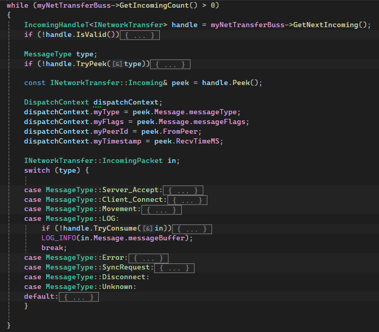
My message handler is how I create and access messages from the network system. It exposes the incoming data to the rest of the system.
The network system parses incoming data into a data structure and places it in a queue.
When using the handler, you can peek at a message to check its type, defer it if it needs to be handled elsewhere, or skip it if it’s not relevant. This helps avoid keeping invalid or unused data in the system.
Conclusion
Even though I would have liked to continue working on this project, I am still satisfied with what I accomplished.
I managed to get the server ownership and transfer protocols working as I intended. There are still areas I would like to improve or expand on, such as player interactions across servers, moving to a quadtree system to divide the world into server regions, and more.
In the end, the networking experience I gained from this project is priceless, and it made me realize that I really enjoy working with networking.